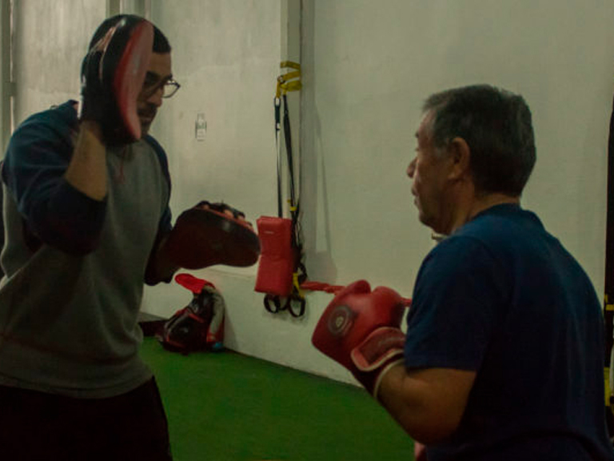
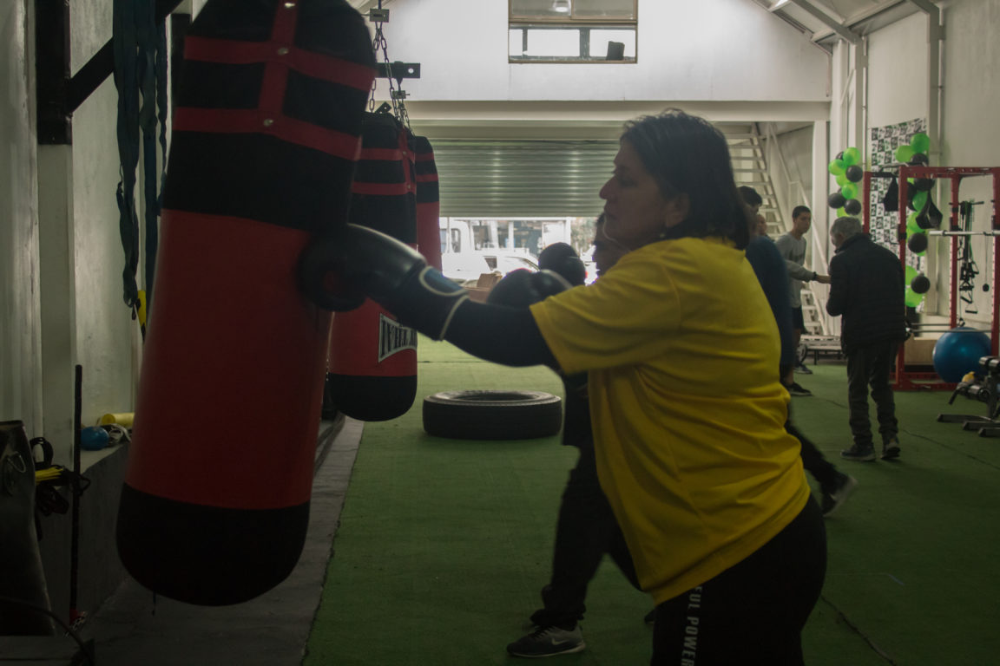
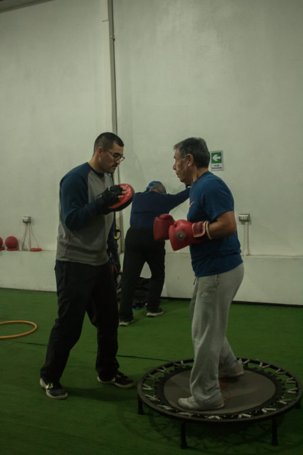
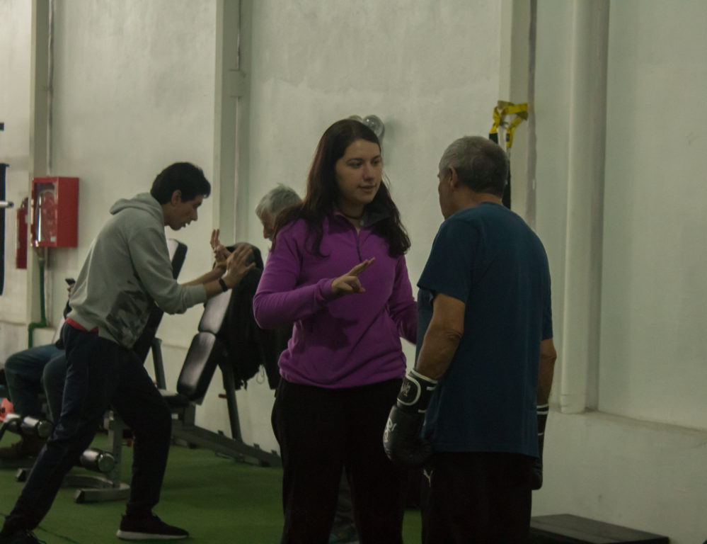
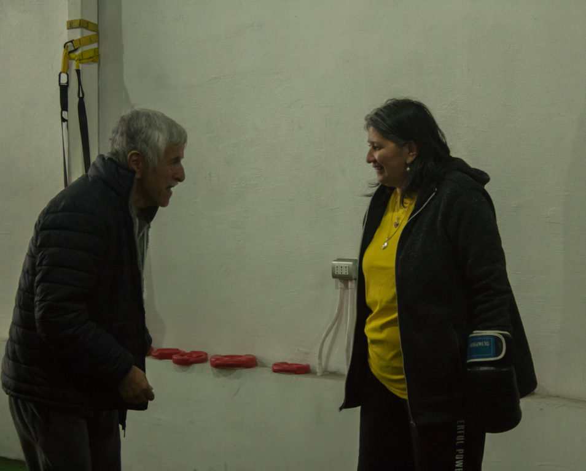

En 2017 se implementó en Concepción Neuroboxing Parkinson, un programa pionero en el país que busca mitigar los efectos del Parkinson a través del boxeo. La idea es de tres kinesiólogos penquistas.
Teresa Nova jamás pensó dejar el salón de clases. No estaba en sus planes. Fueron 34 años educando a niños de enseñanza básica en la Escuela Lautaro de Nonguén.
En 2008, Teresa comenzó a sentir que sus dedos ya no tenían fuerza, sus manos temblaban, le costaba mucho coordinarse y perdía constantemente el equilibrio, pero los médicos le decían que no tenía nada.
Los malestares la tuvieron con licencia médica por varias semanas, hasta que el médico diagnosticó Parkinson, una enfermedad que afecta al sistema nervioso y que provoca dificultades motoras.
Teresa sabía que los síntomas no desaparecían con el tiempo, al contrario. Así que no tuvo más opción que dejar de hacer clases y jubilar anticipadamente, dejando atrás una vida al servicio de la educación.
Reconoce que su vida dio un giro drástico. De ser una mujer autovalente, pasó a necesitar de la ayuda de otros para actividades cotidianas, como ir de compras o salir a la calle. El miedo a perder el equilibrio y a caerse estaban siempre presentes.
Pero en 2017, a través de un grupo de Facebook, Teresa se enteró de Neuroboxing Parkinson, un programa que prometía rehabilitación y mejoras a los síntomas de la enfermedad a través del boxeo.
Con la ayuda de los kinesiólogos Lorena Bernales, Miguel Pino y Pablo Roa, Teresa logró que la enfermedad no tomara el control de su vida. “Puedo hacer tranquilamente una vida normal, autovalente, porque antes dependía mucho de otras personas”, dice.

Neuroboxing nació en 2006, en Los Ángeles, Estados Unidos. El programa usa el boxeo como entrenamiento neuro kinésico, para controlar los síntomas motores de las personas que padecen esta enfermedad, como temblores, lentitud de movimientos, rigidez en los brazos, piernas, torso y problemas de equilibrio.
En Latinoamérica no se conocía de este innovador método hasta antes de diciembre de 2016, cuando en Concepción un grupo de kinesiólogos quiso replicar la idea.
Durante 2017 pusieron a prueba el programa piloto. Al principio, la recepción no fue tan buena, especialmente porque se asocia al boxeo como un causante del Parkinson.
En 1984, después de tres años de haberse retirado, el boxeador norteamericano Muhammad Ali, una especie de leyenda para este deporte, fue diagnosticado con la enfermedad.
“Nos costó un poco hacer que la gente nos creyera en primera instancia, pero después de los resultados de la investigación que hicimos, cuando los equipos de salud vieron que no era peligroso y los pacientes pudieron probarlo, practicar y ver que les hacía bien, ahí se empezó a dar más fácil la difusión y las convocatorias”, explica Miguel Pino, kinesiólogo y cofundador de Neuroboxing Parkinson.
El programa, pionero en Chile y también en Latinoamérica, se imparte en Concepción, en el gimnasio Zona Box Fit, avenida Los Carrera 1470. El
equipo de profesionales también cuenta con una sede en Linares y próximamente abrirán un centro en la ciudad de Los Ángeles.

Juan Riffo, diagnosticado con Parkinson a los 59 años, fue de los primeros pacientes en recibir la innovadora terapia. Desde entonces, lleva tres años asistiendo al gimnasio y es parte del grupo de 15 pacientes de Neuroboxing Parkinson en Concepción.
“Ya no me tiemblan las manos. Es muy poco. Siento que no ha avanzado, que ha parado un poco el Parkinson, así que me siento cada vez mejor. Y yo me he dado cuenta de que el boxeo es lo que lo alivia a uno un poco”, comenta Juan.
Un síntoma que alertó a Juan fue el temblor de su mano izquierda. Le dificultaba abrocharse las camisas, por lo que decidió ir al médico, quien le diagnosticó Parkinson.
Luego de haber sido detectada la enfermedad, en 2015, Juan comenzó a realizar ejercicios motrices en su domicilio, junto al kinesiólogo Miguel Pino, quien de hecho, lo invitó a formar parte del programa Neuroboxing Parkinson.
Los resultados fueron positivos para Juan desde un comienzo. Hoy, lleva 3 años entrenando y ha evidenciado mejoras a nivel físico como psicológico.
“Todos los ejercicios que les pedimos acá son de hacer muchas cosas al mismo tiempo (…) Esa es una habilidad que al principio no tienen. Teníamos que hacer tareas muy sencillas y concretas…y ahí uno ve que van mejorando la fuerza, la velocidad y la flexibilidad de su cuerpo”, cuenta el kinesiólogo Miguel Pino.

El Parkinson –llamado así por James Parkinson, médico inglés que describió en 1817 por primera vez el trastorno– no solo afecta la musculatura del cuerpo, sino que, al ser un trastorno neurodegenerativo, también causa daño psicológico en quienes lo padecen.
La enfermedad se desarrolla cuando las neuronas que producen dopamina, localizadas en una región cerebral, conocida como sustancia negra, se deterioran o mueren. Cuando se produce el Parkinson los niveles de dopamina disminuyen, generando una anomalía en el cerebro y desencadenando problemas en los músculos y el movimiento del cuerpo.
“Cualquier enfermedad degenerativa es impactante emocionalmente para la persona que lo padece. En este caso, al no querer salir de su hogar, además de tener la enfermedad de Parkinson se le puede agregar un trastorno de personalidad”, explica Carolina Bertoglia, psicóloga de la Universidad del Desarrollo.
Hasta ahora, el programa Neuroboxing Parkinson ha dado buenos resultados, especialmente en el plano emocional. Los pacientes no solo ven mejoras físicas, sino también a nivel mental.
Durante varios meses, y después de ser diagnosticada de la enfermedad, Teresa Nova se sintió muy mal anímicamente. No quería salir de su casa por miedo a que le pasara algo; tampoco se atrevía a comer con su familia, porque ya no era capaz de cortar un trozo de comida.
“Hoy, el cambio es realmente notorio, para uno que vive con la enfermedad y para la familia que está alrededor de uno (…) Desde que empecé a venir me di cuenta de que de alguna forma llegaba a mi casa en mejores condiciones”, asegura la profesora Teresa Nova, quien lleva dos años entrenando este tipo de boxeo.

Los beneficios de la terapia de Neuroboxing se comienzan a notar a partir de los tres meses de entrenamiento. En el caso de Teresa Nova y Juan Riffo los cambios son evidentes. Además, no dejaron que la enfermedad tomara el control de sus cuerpos y mentes. Hoy, ambos, son personas más fuertes.
“Llevan entrenando con nosotros harto tiempo. Podemos decir que ellos ya están en un nivel avanzado, tanto Juan como Teresa, y que nos permite a nosotros como grupo centrarnos en los detalles”, agrega Miguel Pino.
El Parkinson es una enfermedad que hasta el momento no tiene cura. Por tanto, el tratamiento con fármacos y las terapias paliativas, como el deporte, son fundamentales para sobrellevar el trastorno.
En el futuro, se espera que este innovador proyecto se replique en otras partes del país, como Santiago, Talca, Linares, Laja y Los Ángeles, además de capacitar a más personas interesadas en el tema, dada la alta convocatoria que tuvo el curso, realizado este año, y donde incluso personas de otras regiones asistieron.
El programa ya está dando que hablar. De hecho, el pasado mes de junio un grupo de entrenadores de Neuroboxing Parkinson asistió al World Parkinson Congress, en Japón. Una instancia que reunió a personas de todo el mundo que lideran programas para pacientes con Parkinson y donde los jóvenes profesionales también pudieron presentar su innovador método.
Archivo: publicado originalmente el 1 de agosto de 2019 en el sitio anterior de la Sociedad (https://socneurociencia.cl/2019/08/01/noqueando-al-parkinson-programa-de-neuroboxing-busca-mitigar-efectos-de-la-enfermedad-con-deporte/).